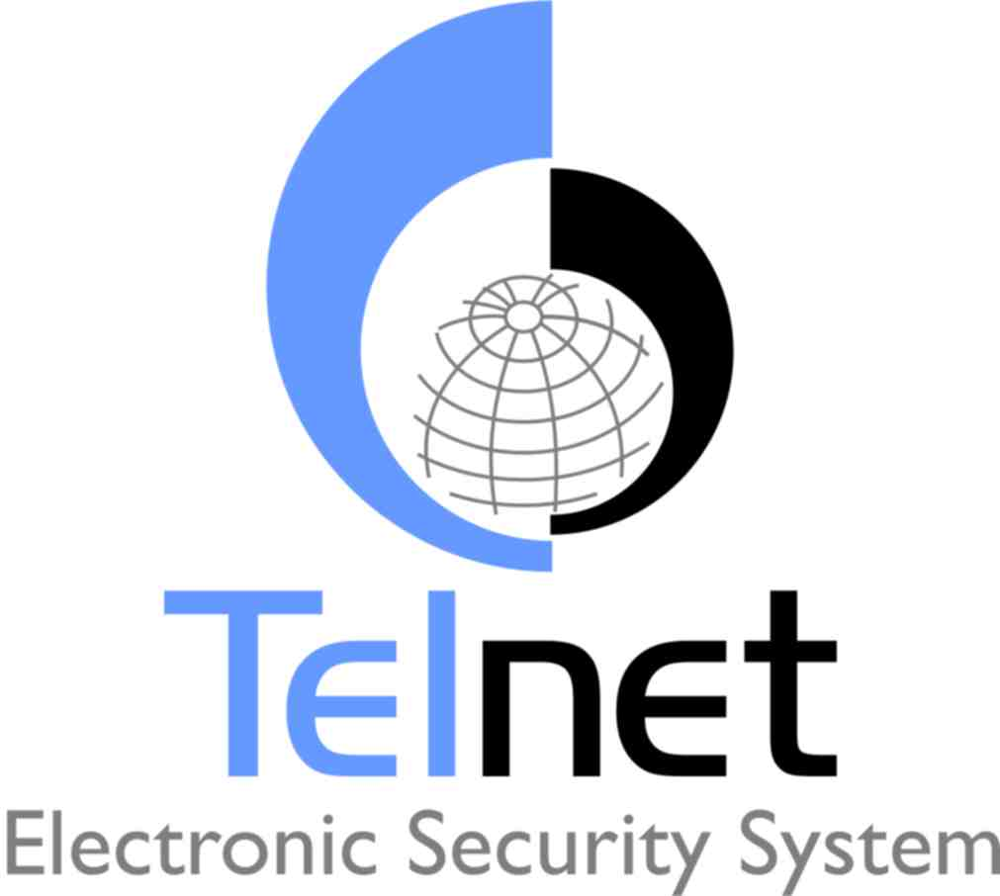

Хотя в сессии Telnet выделяют клиентскую и серверную стороны, протокол на самом деле полностью симметричен. После установления транспортного соединения (как правило, TCP) оба его конца играют роль «сетевых виртуальных терминалов» (англ. Network Virtual Terminal, NVT), обменивающихся двумя типами данных: Прикладными данными (то есть данными, которые идут от пользователя к текстовому приложению на стороне сервера и обратно); Командами протокола Telnet, частным случаем которых являются опции, служащие для уяснения возможностей и предпочтений сторон. Хотя Telnet-сессии, выполняющейся по TCP, свойственен полный дуплекс, NVT должен рассматриваться как полудуплексное устройство, работающее по умолчанию в буферизированном строковом режиме. Прикладные данные проходят через протокол без изменений[2], то есть на выходе второго виртуального терминала мы видим именно то, что было введено на вход первого. С точки зрения протокола данные представляют просто последовательность байтов (октетов), по умолчанию принадлежащих набору ASCII, но при включенной опции Binary — любых. Хотя были предложены расширения для идентификации набора символов [3], но на практике ими не пользуются. Все значения октетов прикла  |